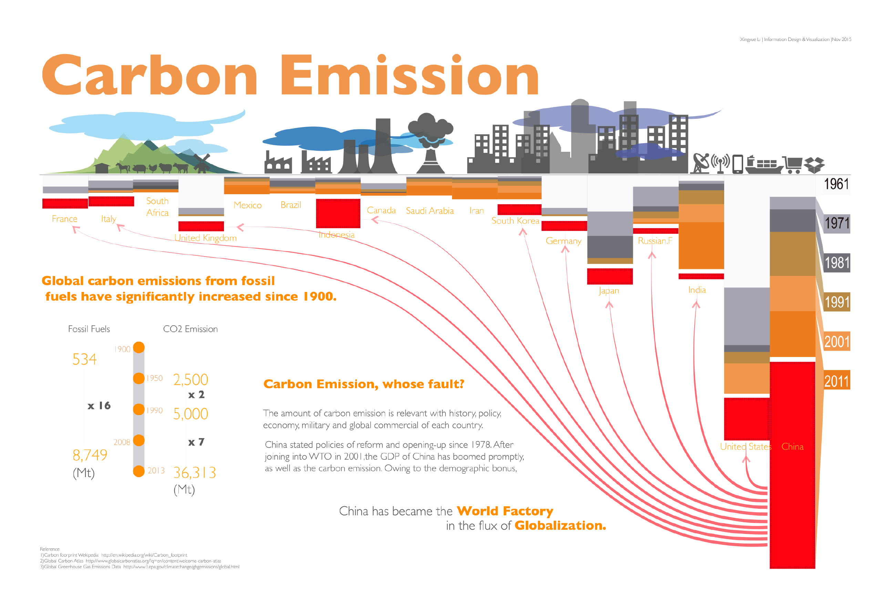
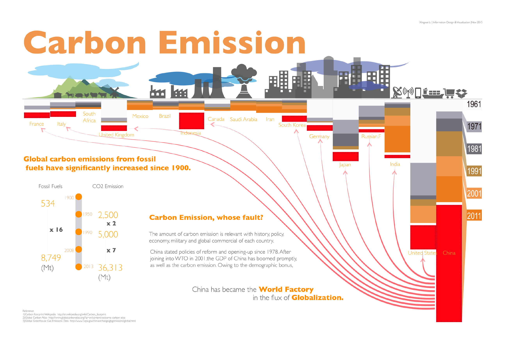
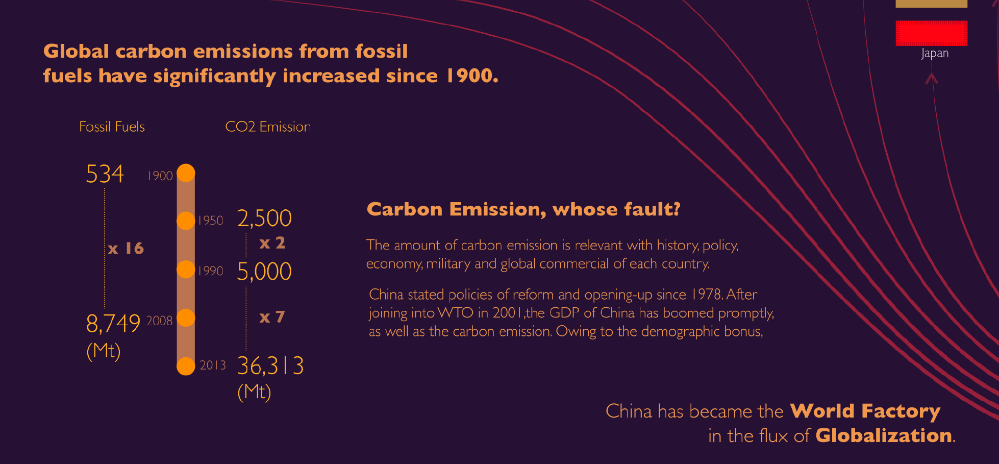
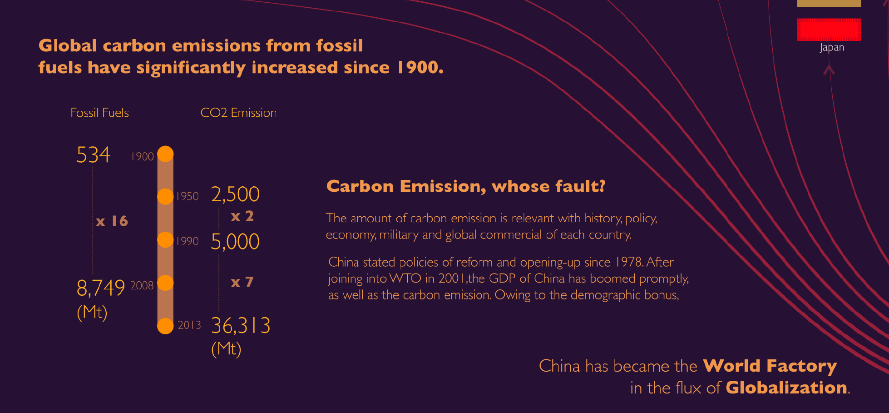
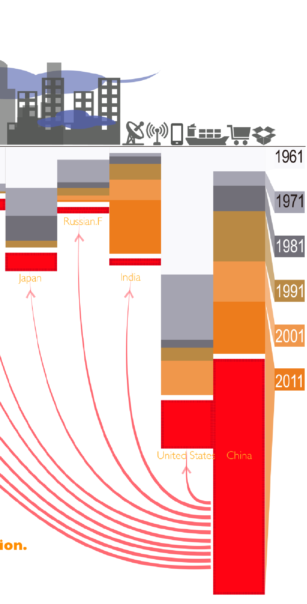
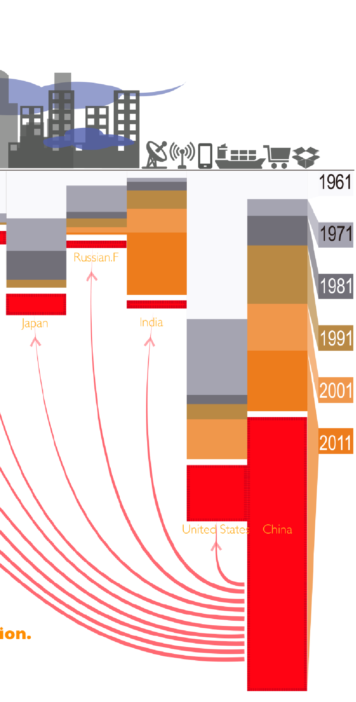
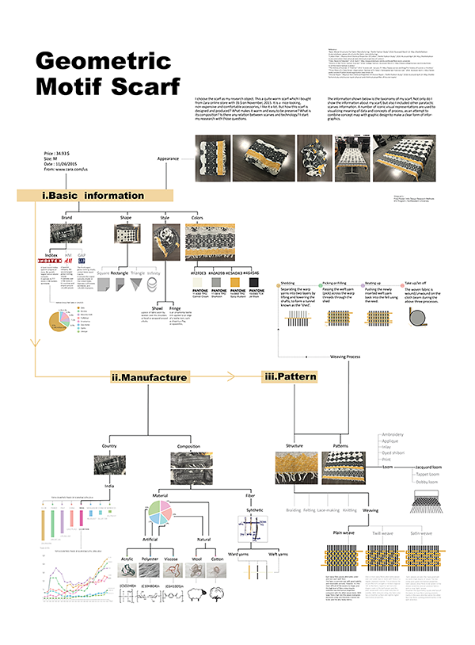
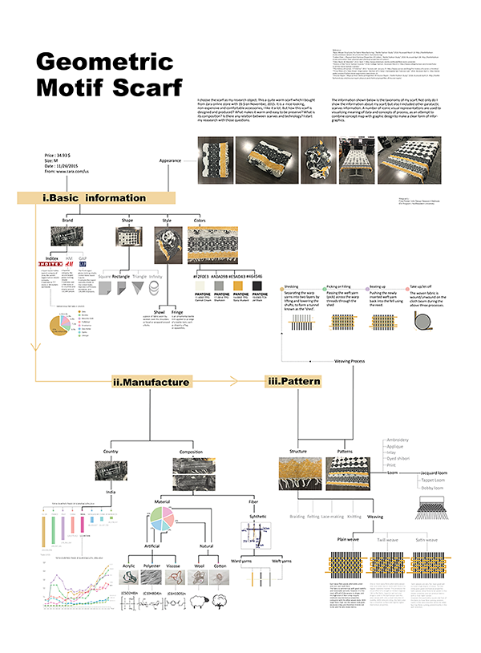

Introduction
This is an object-autopsy project that focusing on one of my personal accessories, a geometric motif scarf. I was interested in exploring more about it since it didn't cost me much and still it was perfect for me to survive the Boston winter.
As something I could not leave the house without, this scarf had become an important part of life. I was interested in exploring the composition and the development of this specific scarf. And I was looking to compare it with other kinds of scarves available across the world.
Composition of the scarf
I started exploring the scarf by analyzing the colors, reading the brand tags. This is a Zara weaving scarves made in India, 34.93$, with rectangle shape and fringe edge, containing some artificial and nature fibers.
Brand
For the brand, Zara is the most popular fashion brand of Inditex, world's largest fashion company, Inditex. I got data from the annual report from Inditex from which I learned that Zara has the largest market share based on the production of fashion textiles. Like other fashion cloth retailer, HM and GAP, Zara has thousands of stores selling cloth and accessories made in multiple countries in the world.
Color
I took pictures of my scarf in different color settings. I tried to figure out what exact color codes are used in my scarf. Pantone is a company which publishes the fashion colors at beginning every year as a reference of colors used in fashion that year. By comparing the four colors of my scarf with Pantone color chart, I found names of the colors in my scarf: cannoli cream, sharkskin, spicy mustard and jet black. All four colors are used in recent years winter fashion design.
Fibers
I checked the information on the tag and got the fibers composition. I went further by cutting a few fibers from the edges and burned them to observe that it contains synthetic fibers. Then I got some sample fibers (acrylic, polyester, viscose, cotton, and wool )similar to my scarf and did some physical analysis about the elasticity.
Then I read research papers about fashion textile properties. The synthetic fibers usually take advantages of maintenance and dying. The natural fibers are more comfortable for skin and keep warm.
Scarf Trade
After basic information exploration, I started to explore more about the trade of the scarves in the world. I got data from the United Nations Commodity Trade Statistics Database and drew some visualization chart among top 10 scarves trade countries and their trade amount changes during decades. India ranked five on 2014's world scarves cloth trade and its manufacturing industry has grown fast recent years. Compared with EU countries like Italy and France, India and China increased greatly on their market share after 2000. And Madagascar and Morocco still have slow growth on their market share trend.
Structure and Manufacture
There are multiple ways to produce a scarf, like braiding, felting, lace making, knitting, and weaving. Weaving cloth can be made by weaving looms quickly in cloth factories. There are three common ways to weave: plain weave, twill weave and satin weave.
Weaving Process
The object scarf is plain-weaved by looms. Here are four steps in weaving process.
- Shedding : During this step, warp yarns are separated into two layers by lifting and lowering the shafts, to form a tunnel known as the ‘shed’.
- Picking or Filling : Loom passes the weft yarn (pick) across the warp threads through the shed.
- Beating up : Pushing the newly inserted weft yarn back into the fell using the reed.
- Taking up/ letting off : Pushing the newly inserted weft yarn back into the fell using the reed.
Conclusion
During this research, I found a lot of interesting data and fact behind my scarf and I tried to create ways to visualize those data to generate a “visual-taxonomy” of the object. This scarf is a collection of fashion-design, global trade economy and industry-manufacture.


 


 

 



 
